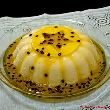

Receita - Mousse de Maracujá
Ingredientes
- 1 lata de leite condensado
- 1 lata de creme de leite
- 1 lata de suco de maracujá(aproximadamente 4 maracujás)
- 1 pacote de gelatina incolor
- Sementes de maracujá(para a decoração)
Modo de Preparo
- Hidratante de gelatina na água, e depois dissolva em banho-maria
- Misture todos os ingredientes em um liquidificador(exceto as sementes de maracujás)
- Bata os ingredientes no liquidificador, em potência máxima, por 2 minutos
- Coloque o mousse em um recipiente e decore-o com as sementes de maracujá
- Coloque o mousse na geladeira, deixando em refrigeração por aproximadamente 4 horas
- Devore!
Informações Nutricionais
| Nutrientes |
Porção |
%VD |
| Valor Calórico(Kcal) |
225,37 |
9,01 |
| Carboidratos(g) |
40,56 |
10,82 |
| Proteínas(g) |
5,97 |
8,53 |
| Gorduras Totais(g) |
4,36 |
5,45 |
| Gorduras Saturadas(g) |
2,71 |
10,83 |
| Colesterol(mg) |
16,68 |
5,56 |
| Fibras Alimentares |
0,30 |
|
| Cálcio |
142,21 |
17,78 |
| Ferro(mg) |
0,26 |
1,89 |
| Sódio(mg) |
91,60 |
3,82 |